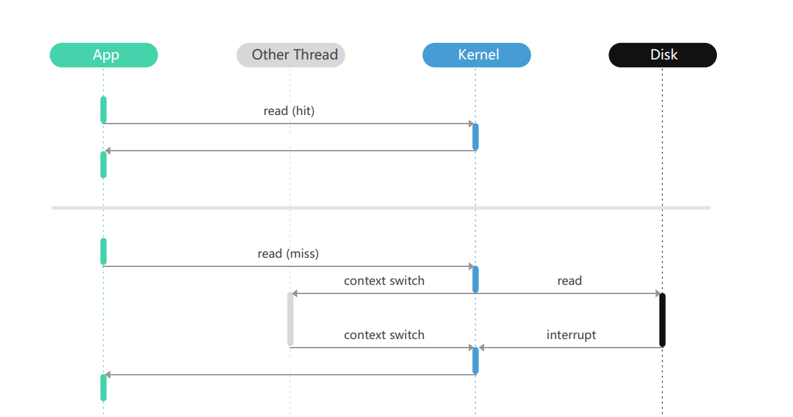
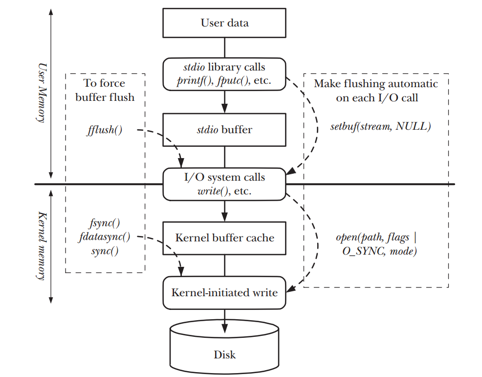
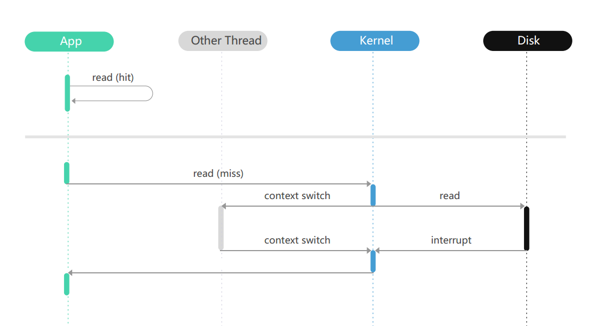
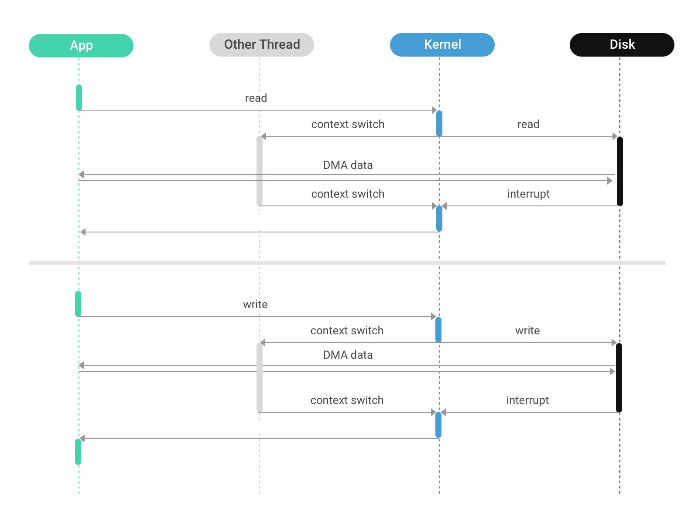
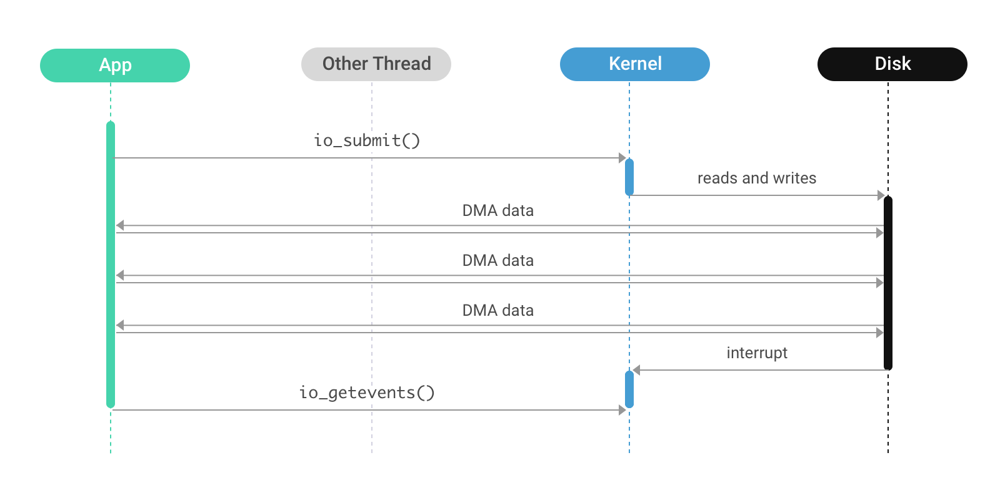

这篇主要是从 scylla 的 Blog 翻译过来的，同时也参考了数据库架构的这篇 Paper
数据库存储管理之 I/O
绝大多数的服务器开发在讨论 I/O 的时候，基本都是在讨论网络 I/O，但是在开发数据库的时候，更多的是考虑系统 I/O。现在的数据库的存储管理大致可以分成两种，一种是直接与磁盘的底层模块（设备驱动）进行交互读写，还有一种是使用 OS 提供的文件系统。前一种常见于商业数据库，后面一种则是更常见更通用的方案。虽然理论上讲绕过文件系统，在 row-mode 下直接对磁盘进行读写，可以得到更好的性能，但是这样系统会更复杂，我们不做过多讨论，只关注第二种方式。
Linux File I/O
Linux 有 4 种常见的读写文件的方式，我们在后面会一一分析。
read/write 这个是操作系统提供的 read 和 write 两个系统调用。 调用过程是当前进程调用 read 这个系统调用，向 kernel 申请读一个文件的多少长度的内容。这里需要注意系统的 cache，如果你要读的内容刚好在系统 page cache 里面，那 kernel 就会把这部分内容直接从 内核态 复制到 用户态，这个 read 的系统调用就完成了。反之，kernel 就需要到硬盘来读取这部分数据到自己的 page cache，这个过程会block 原来的那个 Thread，等到数据都被读取到内核态的时候，Thread 被重新唤醒，然后将数据从内核态拷贝到用户态。 write 操作与 read 有点类似，当调用 write 的时候，操作系统会把数据 copy 到 page cache 里面，然后内核会在之后将数据刷入磁盘。调用过程如图


注意点：
- 可以说系统调用与磁盘的操作并不是同步的，我们在调用 write 成功之后，这个数据也有可能还在内存里面，没有被写入到磁盘上。
- OS 的 page cache 对性能做了一些优化，但是对数据来说不够准确。buffering 实现了 read-ahead 预读技术跟 write-behind 技术。这个对数据来说不一定合适。比如 WAL需要及时落盘，比如我们查询的时候，数据的逻辑更知道应该预先读取哪些数据，而不是默认顺着文件预读。
- 还有就是 double buffering问题以及数据拷贝问题。上面的调用过程中我们可以看到，用户态跟 kernel 都会在内存里面维护这份数据，浪费内存。同时来回拷贝数据也浪费计算资源（CPU），先从硬盘到 OS 的 page cache，然后再从 OS 的page cache 到用户空间的内存里面。
- 在这个过程中，系统调用，如果用户态频繁的调用系统调用，成本会很高。
Mmap
还有一种比较高级的方法是调用 mmap 这个系统调用，直接把一个文件映射到用户空间的内存里面。这样就可以同在相应的内存区域操作字节来访问文件内容。映射的分页会在需要的时候自动从文件中加载进来。在读数据的时候，如果这块数据已经被加载到内存中，那就会直接在用户空间的内存里面读取内容，绕过 kernel 层。如果没有加载到用户内存中，就会引发一个 page-fault，然后kernel 从硬盘给这个 page 读取数据。当数据准备完成之后，这个线程会被唤醒，然后继续从内存里面读取数据。与 read 系统调用的区别是，一旦数据加载到内存中，线程可以直接读取内存中的数据，而不需要再多一次系统调用，也避免了从 kernel 到用户空间的数据拷贝。如果数据没有被加载到内存里面，则于 read 区别不大。过程如下：

Driect I/O read/write
操作系统允许应用程序在执行磁盘 I/O 的时候绕过缓冲区的 page cache，从用户空间直接把数据传递到磁盘。也就是直接 I/O，也叫做 裸 I/O。对于普通的服务端 app 来说，用 direct I/O 可能不会比用 read/write 要好，因为操作系统本身为I/O 做了很多优化，如果用了 direct I/O ，那就没有办法受益于这些优化了。但是数据库不是这样。数据有特定的 I/O需求。而且无论是 read/write 还是 mmap，都把 I/O 的调度交给了内核，数据库为了追求性能，自己来做 I/O 调度是最好的。Direct I/O 读写在使用上跟普通的 read/write 区别不大，只是打开文件的时候，传递一个 O_DIRECT 的 flag 进去。在读的过程中，现场对用 O_DIRECT 打开的文件调用 read 系统调用，然后这个线程直接休眠，磁盘寻址，读取数据，然后直接把数据传递给用户线程。中间不再需要 kernel 中转一下。

Asynchronous direct I/O
AIO 是 DIO 的改进版本，这两个很相似，但是区别是 DIO 在调用 write 的时候，会block；而 AIO 则是调用 io_submit 这个系统调用，并且不会 block。这个线程完全控制由用户控制。同时还可以用 io_getevents 来收集 I/O 操作的结果。这些数据都不会被拷贝到 kernel page cache 里面去，而是直接被拷贝到用户空间中
